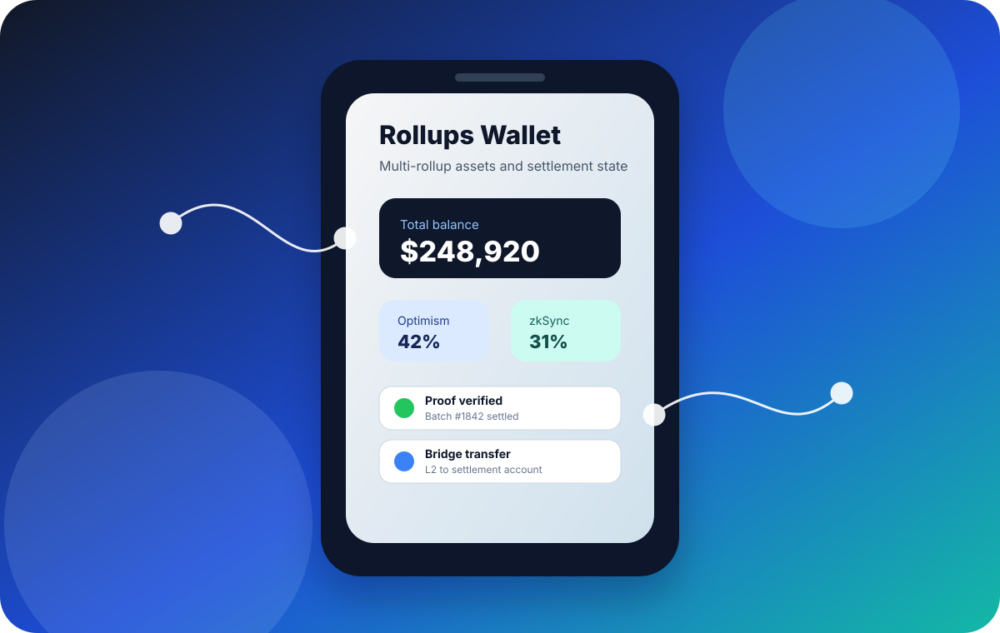
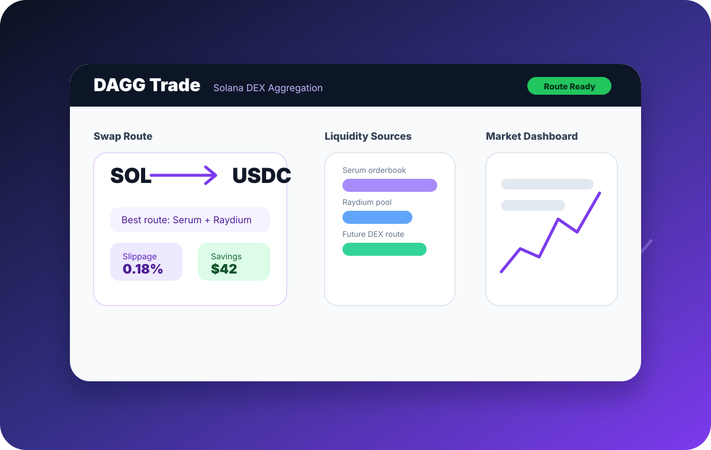
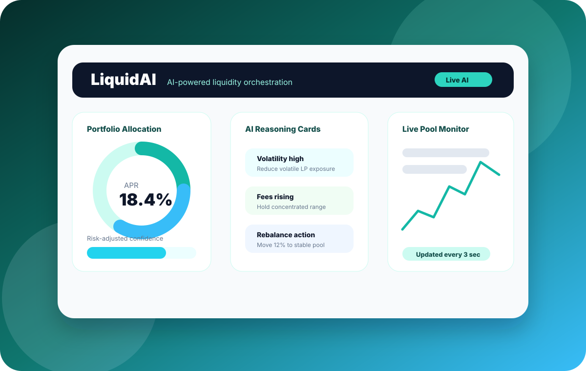

Rollups Wallet
Wallet and settlement UX for rollup-based assets, focused on making ownership, proofs, transfers, and account state understandable to users.
Prior work across rollup wallet UX, Solana DEX aggregation, and AI-driven liquidity orchestration.



Wallet and settlement UX for rollup-based assets, focused on making ownership, proofs, transfers, and account state understandable to users.
Solana DEX aggregation, low-slippage routing, multi-protocol liquidity integration, and a one-stop trading dashboard.
AI-assisted liquidity orchestration using live market data, reasoning cards, portfolio rebalancing, and transparent automation.
FloatX is positioned as a private-market trading ecosystem where investors can discover, evaluate, trade, settle, and verify high-value private opportunities.
For FloatX, that means helping move private-market assets from static listings into an AI-assisted, blockchain-verifiable trading experience.
Private-market liquidity is fragmented across investors, issuers, funds, jurisdictions, currencies, and settlement processes.
The product problem is similar: make fragmented liquidity understandable, tradable, and trusted.
AI is most useful when it reduces friction in real decisions, not when it sits beside the product as a generic chatbot.
FloatX users should not need to understand blockchain to benefit from it. The product experience should translate infrastructure into trust.
Not by copying public exchanges, but by building the missing intelligence and trust layer for private assets.
A focused demo that helps investors move from curiosity to confidence.
I would be most valuable as a product-minded builder across AI, blockchain, and trading UX.
For FloatX, that means helping build the AI-assisted, blockchain-verifiable private-market trading experience that sits between opportunity discovery and completed settlement.
The best next step is a working FloatX-specific prototype: AI Private Market Trading Copilot.